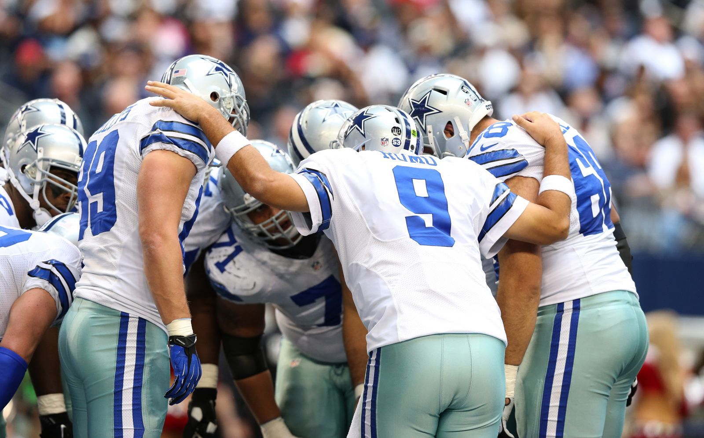
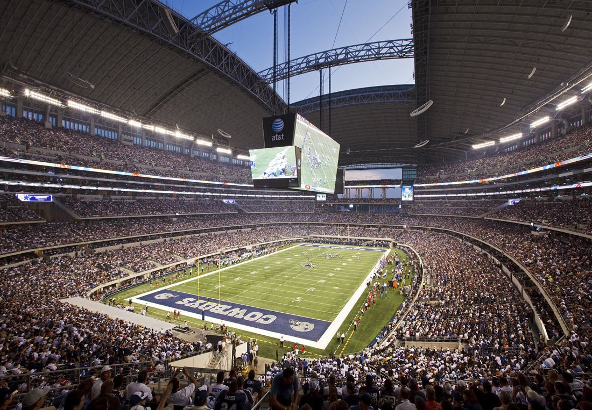

More Cowboys Photos
The Dallas Cowboys are a professional American football team based in the Dallas Fort Worth metroplex. The Cowboys compete in the National Football League (NFL) as a member club of the league's National Football Conference (NFC) East division. The team is headquartered in Frisco, Texas, and plays its home games at ATT Stadium in Arlington, Texas, which opened for the 2009 season. The stadium took its current name prior to the 2013 season. The team mascot is Rowdy.
The team was first known as the Dallas Steers, then the Dallas Rangers. On March 19, 1960, the organization announced that it would be called the Cowboys to avoid confusion with the American Association Dallas Rangers baseball team. The founding investors of the Dallas Cowboys were Clint Murchison, Jr. (45%), John D. Murchison (45%), along with minority shareholders, Toddie Lee and Bedford Wynne (Director and Secretary) (5%),and William R. Hawn (5%). The new owners subsequently hired Tex Schramm as general manager, Gil Brandt as player personnel director, and Tom Landry as head coach. The current owner, president, and general manager is Jerry Jones. The head coach is currently (2014) Jason Garrett.
The Dallas Cowboys have won 5 NFL super bowls in 1971, 1977, 1992, 1993, and 1995.In 2015, the Dallas Cowboys became the first sports team to be valued at $4 billion, making it the most valuable sports team in the world, according to Forbes. The Cowboys also generated $620 million in revenue in 2014, a record for a U.S. sports team. The Dallas Cowboys have 21 former members enshrined in the Pro Football Hall of Fame including Herb Adderley, Troy Aikman, Larry Allen, Lance Alworth, Mike Ditka, Tony Dorsett, Forrest Gregg, Bob Hayes, Michael Irvin, Tom Landry, Bob Lilly, Tommy McDonald, Bill Parcells, Mel Renfro, Deion Sanders, Tex Schramm, Emmitt Smith, Jackie Smith, Roger Staubach, Randy White, and Rayfield Wright.

There are many legendary Dallas Cowboys players but my three personal favorites are:
For more information on the Cowboys, you may visit: The Dallas Cowboys official website.